Entryway Rug Ideas: 13 Rugs and Runners for Every Size of Entry
A rug does more work in an entryway than almost anywhere else in the house. It catches dirt, softens the floor, defines the space and adds the color and texture an entry often lacks. It's also the item people most often get wrong, with rugs that are too small, too thick for the door or that slide around underfoot.
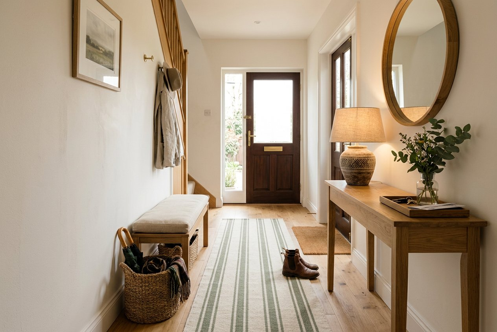
This guide has 13 entryway rug ideas, from runners and washable rugs to indoor-outdoor, jute, vintage and layered options. It also covers how to choose the right size, pile and material, and how to care for the rug once it's down. Most ideas work in small and narrow entries too. This post is part of our entryway series, so see the complete guide to decorating an entryway for the full plan.
How to choose an entryway rug
Start with the walkway. Measure the floor and keep a clear path about 36 inches (91 cm) wide. In a narrow entry or a hallway, choose a runner that leaves roughly 4 to 6 inches of bare floor on each side. In a wider entry, choose a rug large enough to stand on with both feet while you take off your shoes, which usually means 3 x 5 feet or bigger.
Then check the pile. Choose a low pile, about 1/4 inch (6 mm) or less, so the front door clears the rug. Flatweaves are the easiest to live with. Before you commit, open the door fully with the rug in place, or lay a folded towel of the same thickness on the floor and test it.
Choose the material for the way you live. Wool is durable and hides dirt, polypropylene resists moisture and mildew, cotton flatweaves are often machine washable, and jute and sisal add natural texture but dislike water. Darker colors and patterns hide daily dirt better than pale solids.
Finally, add a non-slip pad. It stops the rug from sliding, keeps the corners flat and protects the floor, and it's the cheapest way to make a rug safer.
1. Lay a runner in a narrow entry
A runner is the natural choice for a long, thin entry or a hallway. It leads the eye toward the rest of the house and protects the floor where people walk the most. Common sizes are 2 x 6 feet and 2.5 x 8 feet, but measure first, since the runner should leave about 4 to 6 inches of bare floor on each side and stop short enough for the door to swing. In a very narrow hall, a runner 20 to 24 inches wide still leaves room to pass. A striped or patterned runner makes the space feel longer, and a plain one keeps it calm. Our guide to narrow entryway rug ideas goes into more detail.
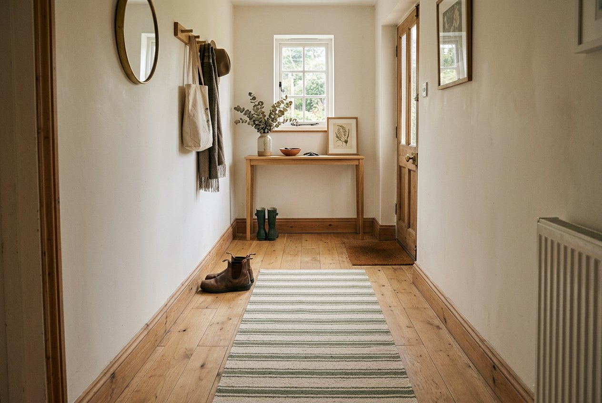
2. Choose a washable rug
Entries take mud, salt, rain and pet hair, so a rug you can wash is a smart pick. Many machine-washable rugs are thin flatweaves that go into the washing machine at home, and some come with a separate pad. Check the label for size and temperature limits before you buy, since a large rug may not fit your machine. A washable rug lets you stop worrying about every wet boot. Look for stain-resistant finishes, and choose a darker or patterned design that hides the daily dirt between washes.
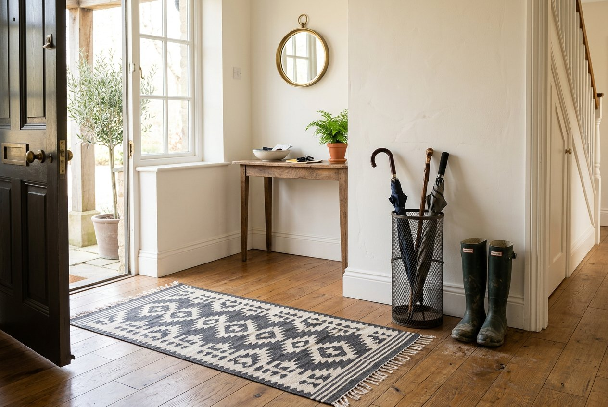
3. Try an indoor-outdoor rug
Indoor-outdoor rugs are made from synthetic fibers such as polypropylene, which resist moisture, mildew and stains. They're a good fit for an entry that gets wet shoes, snow or rain, and many can be wiped, vacuumed or even hosed off. The weave is often flat, so the door clears easily. Choose one with a texture you like, since modern versions look like jute or wool without the drawbacks. Use a pad made for the rug and your floor, and shake it out regularly so grit doesn't build up underneath.
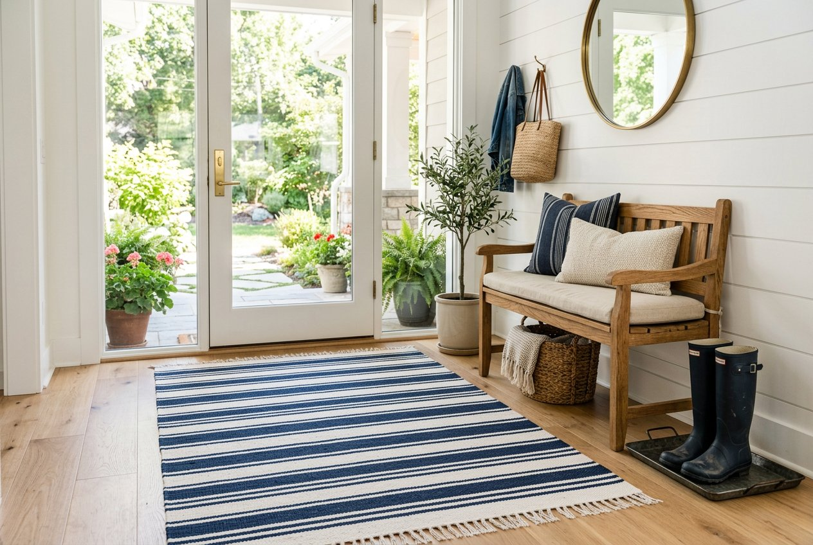
4. Use a jute or sisal rug for texture
Natural fiber rugs add warmth and a relaxed look, and their neutral color works with almost any palette. Jute is soft and affordable, and sisal is tougher, though both dislike water and can stain. Use them in a dry entry, or put a doormat outside and take wet shoes off at the door. Vacuum them regularly with the beater bar off, since they shed a little at first. Pair a jute rug with a linen cushion and a few baskets for a boho or cottage look, and add a pad to stop it sliding.
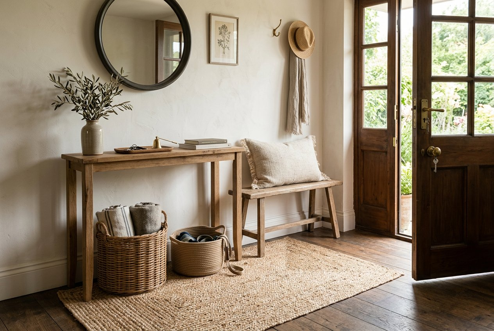
5. Go bold with pattern
Pattern hides dirt and adds personality, which makes it a good match for a hard-working entry. Stripes, checks, geometric designs and kilim-style rugs all work. If the rug is the boldest thing in the entry, keep the walls, console and accessories simple, and pull one or two of its colors into your art or a vase. Choose a pattern with a mid-tone background instead of a pure white one, since white shows every footprint. A bold rug also draws the eye down, which helps a plain entry feel finished.
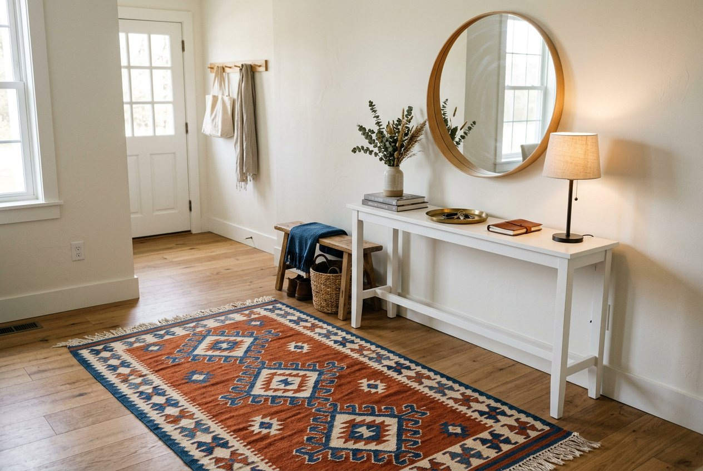
6. Layer rugs in a wider entry
Layering adds depth to a larger entry. Start with a flat natural rug, such as jute or sisal, as a base, then put a smaller patterned or vintage rug on top. It lets you change the look with the seasons by swapping only the top rug. Use a pad under the base rug, keep both pieces low pile, and check that the edges lie flat, since layered rugs can be a trip hazard. Layering also raises the height, so test the door clearance first. It works best in a foyer, not a narrow hall.
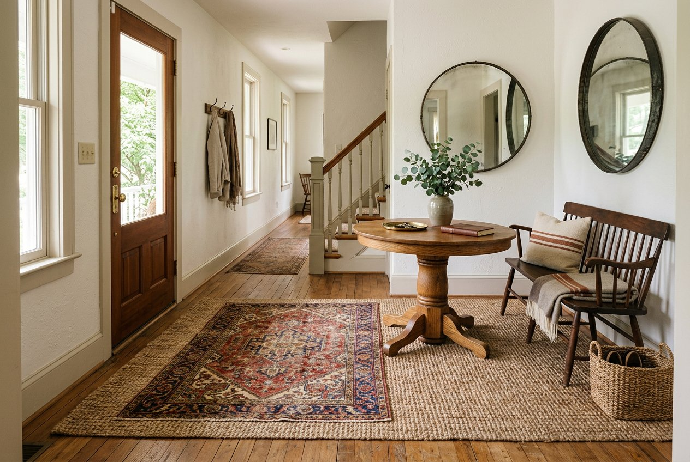
7. Pick a round rug for a round table
A round rug breaks up the straight lines of doors and furniture, and it suits a round table in a larger foyer or the center of a square entry. Choose a diameter large enough that the table sits comfortably on it, with room for a chair or a bench nearby. Common sizes run from about 4 to 6 feet. A wool or flatweave round rug in a soft color keeps the look calm. Make sure the front door doesn't catch on the edge, and leave a clear path around the circle so people can walk past.
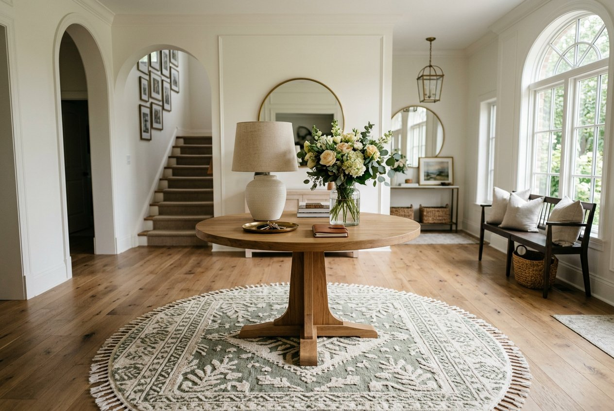
8. Use a vintage or Persian-style rug
A vintage rug adds history, and its worn, faded colors and busy pattern are very forgiving in an entry. Kilims and flatweaves are lighter and thinner than pile rugs, so the door clears more easily. Check secondhand shops, estate sales and online marketplaces, and look at the back of the rug for even wear and no damp smell. Have it professionally cleaned if you're unsure of its past, and always use a pad. Keep it out of the wettest part of the entry, and put a doormat by the front door to take the worst of the dirt.
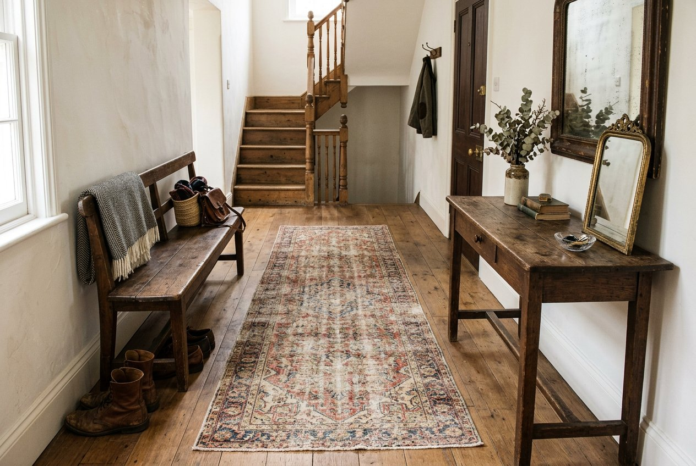
9. Choose a low-pile flatweave so the door clears
A thick rug that catches the front door is the most common entryway rug problem. A flatweave has no pile to speak of, so the door swings freely over it, and it's easy to vacuum and shake out. Cotton, wool and synthetic flatweaves all work. Test before you buy: open the door fully with the rug in place, or lay a folded towel of similar thickness where the rug will go. If the door catches, move the rug back from the door, choose a thinner rug or leave a small gap in front of the threshold.
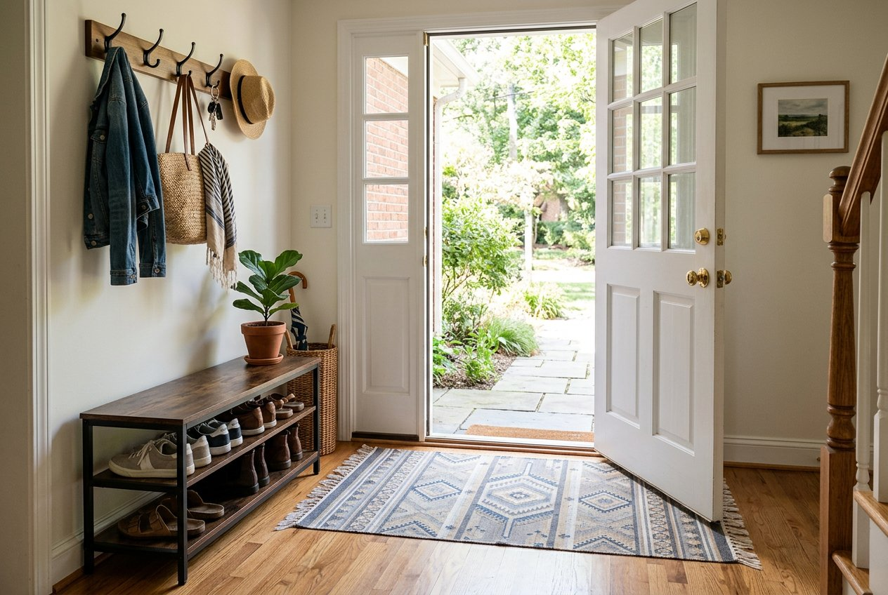
10. Add a good rug pad
A pad is the least glamorous part of an entry rug and the one that matters most for safety. It stops the rug from sliding, keeps the corners from curling and cushions the floor. Choose a thin pad, about 1/8 inch, so the door still clears, and make sure it's safe for your floor, since some rubber pads can discolor vinyl and finished wood. Trim the pad about an inch smaller than the rug on every side, so the edges don't show. Replace the pad when it gets flat or brittle.
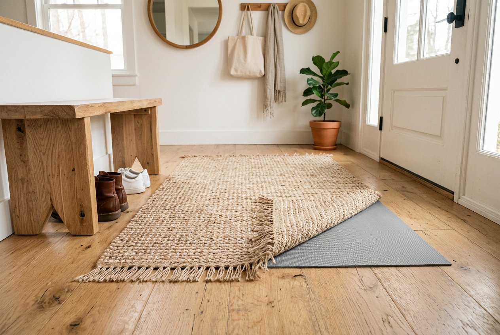
11. Define a no-foyer entry with a rug
When the front door opens straight into the living room, a rug creates an entry out of thin air. Lay a 3 x 5 or 4 x 6 foot rug just inside the door, and put a slim console, a mirror and a row of hooks beside it. Choose a different color or pattern from the living room rug, and keep the two rugs apart, so the entry reads as its own zone. A hard-wearing, washable rug works best here, since it's the one that meets the dirt. Our guide to apartment entryway ideas has more ways to create an entry.
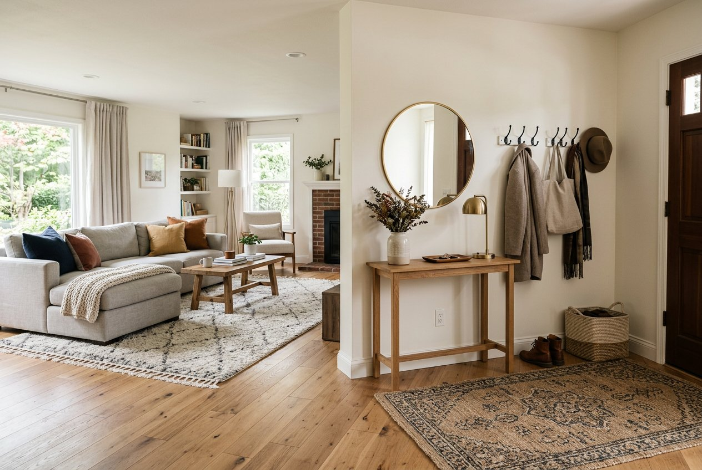
12. Pick a rug that matches your palette
A rug can be the starting point for the whole entry. Choose it first, then pull one or two of its colors into a print, a vase or a lamp shade. If your walls are a strong color, choose a quieter rug, and if the walls are plain, a bold rug can carry the room. Darker rugs hide dirt, and lighter ones make a small entry feel larger, so pick the one that fits how much you're willing to clean. Bring a sample home and look at it in your own light before you buy.
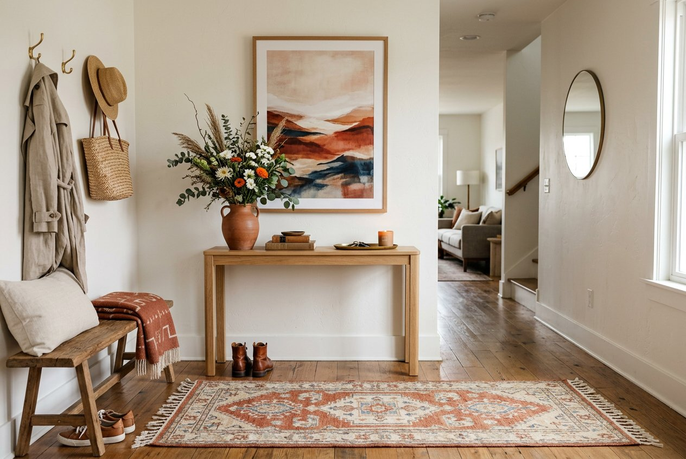
13. Choose a pet- and kid-friendly rug
A busy household needs a tough rug. Look for a short pile that sheds less and doesn't snag claws, a stain-resistant finish and a washable cover or a washable rug. Avoid long shag and loose fringe, which pets and small children love to pull. Darker colors and patterns hide muddy paws and sticky fingers, and a pad keeps the rug from sliding when someone runs across it. Keep a small towel or a boot tray by the door, so the worst of the wet and mud stays off the rug.
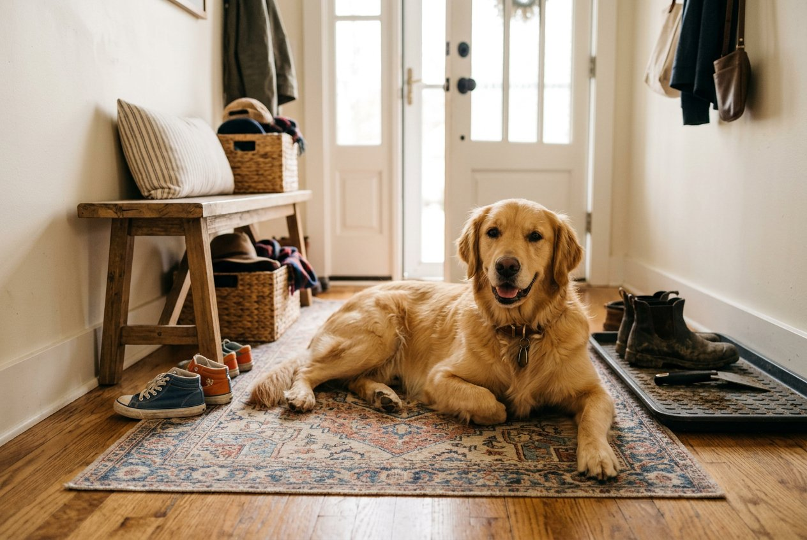
Entryway rug size guide
These are common starting sizes, so always measure your own space first.
- Narrow hallway: a 2 x 6 or 2.5 x 8 foot runner, leaving about 4 to 6 inches of bare floor on each side.
- Small entry: a 2 x 3 foot rug, or a 3 x 5 foot rug if the floor allows it.
- Mid-size entry: a 3 x 5 or 4 x 6 foot rug.
- Large foyer: a 5 x 8 foot rug, or a round rug of 5 to 6 feet under a table.
Whatever the size, keep the walkway at least 36 inches (91 cm) wide, and check that the door opens fully.
How to care for an entryway rug
A little routine keeps an entry rug looking good for years.
Vacuum it weekly, and shake it out outdoors every few weeks. Rotate it every few months, so wear spreads evenly. Blot spills straight away with a clean cloth instead of rubbing, and follow the care label for washing. Put a doormat outside the front door and ask people to take wet shoes off, since that alone saves most of the wear. Lift the rug now and then to vacuum the pad and the floor underneath, where grit can scratch the finish.
Entryway rug mistakes to avoid
- Buying a rug that's too small. A tiny rug floats in the space, so choose one big enough to stand on or one that fills the walkway.
- Choosing a thick pile. It catches the door, so test the clearance first.
- Skipping the pad. A rug without one slides, curls and wears faster.
- Forgetting the border. In a hallway, a runner that touches both walls looks cramped, so leave bare floor at the sides.
- Using jute in a wet entry. Water stains natural fibers, so pick a synthetic or washable rug instead.
- Ignoring the door swing. Measure with the door open before you buy.
What size rug should I use in an entryway?
In a narrow entry, use a runner such as 2 x 6 feet that leaves 4 to 6 inches of bare floor on each side. In a wider entry, a 3 x 5 or 4 x 6 foot rug is a good start. Keep a 36 inch (91 cm) walkway clear.
Should an entryway rug be washable?
It's a good idea. Entries take the most dirt, so a washable or easy-to-clean rug, such as a flatweave or an indoor-outdoor rug, saves effort. Check the care label for size and temperature limits.
Can I put a rug in front of the front door?
Yes, if the door clears it. Choose a low pile of about 1/4 inch or less, and test the clearance with the door fully open. Put a doormat outside the door as well.
How do I keep an entryway rug from sliding?
Use a thin non-slip pad that's safe for your floor, trim it an inch smaller than the rug and replace it when it gets flat. A rug with a rubberized backing can also help, though check that it won't mark the floor.
Save this guide for later
Pin the image below to your entryway or home decor board.
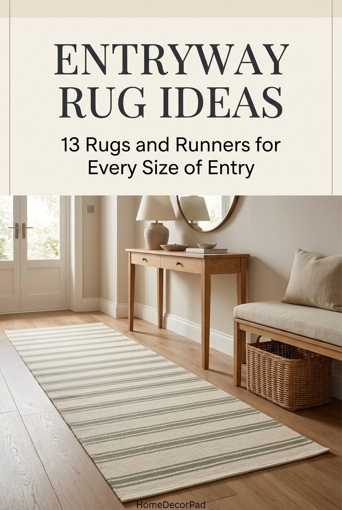
Where to start
Measure your floor and the door swing, choose a size and a low pile, and add a pad. Then pick a pattern or color that suits your palette. For the full plan, see our complete guide to decorating an entryway, or read entryway decor for 15 ideas beyond the floor and entryway bench ideas for a place to sit.
Save this idea for laterPin the graphic below to your entryway board so you can find it when you are ready to shop.
Copy-and-paste pin title & description
Pin title: Entryway Rug Ideas: 13 Rugs and Runners for Every Size of Entry
Pin description: 13 entryway rug ideas for every size of entry: runners, washable and indoor-outdoor rugs, plus sizes, materials and tips for choosing the right one. #entrywayrugideas #entrywayrug #entryrug


Join the conversation
Comments
Anonymous on top — no login, no GitHub. GitHub comments below.
No comments yet — be the first!
Leave a comment — no login needed